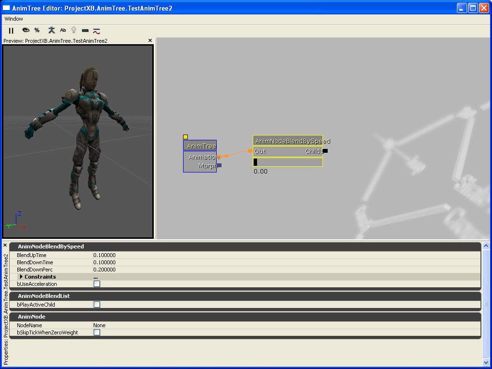

Solid Snake/CreatingPawnsRB Part2
Creating your own pawn class [AnimTree Overview] - Part 2
Introduction
Animation is an important part of any game. Almost every game had some sort of animation, starting from animating pictures to sprites, then eventually to polygonal animation. Of course, with the evolution of each form of animation you had different methods. At first you just had different images that are changed on the fly to make objects appear that they are moving or doing some action. With the advent of Quake you had animating models, which were tweening between different mesh transformations (vertex animation). As poly counts increased with models, we now have skeletal animation being used real time. The newest thing to come round the corner is mixing in physics with animation, but where it stands now, its very rudimentary. There hasn't been any more significant changes in animation types, but rather the way they are managed have evolved.
Skeletal animation
The basic run down of skeletal animation is that the meshes vertices are influenced by two properties, a vector and quaternion (or rather rotator in the sense of Unreal Engine). Thus the vertex will change its position accordingly to those properties (a vector can be represented by a bone [its base], with its direction represented by two vectors ... the base and the end point of the bone. Basically, you had much smoother animations than vertex animation, used less memory (you only had to store the changes of the bones, verses storing all of the mesh transformations) and you could do other neat thing outside the 3D Editor (such as 3DSMax). Some such things we take for granted is bone blending (Which can help us do things such making a character's head look at something)
Unreal Engine
Unreal has gone through all the forms of animations from sprite animation, to mesh transformations, and finally we now use mainly skeletal animation to animate skeletal meshes. Unreal Engine 3.x supports a whole bunch of fancy things to help animators achieve the perfect animation in game, and it has a great tool to make it easier to do so. The largest difference between Unreal Engine 2.x and Unreal Engine 3.x is the fact that programmer intervention is a lot smaller now. And with the removal of a lot of tedious programming (animation is actually very tedious to me, the programming of it. Animating itself, is quite fun) it means that creating smoother and much more free flowing animation is even easier, with much better results. So without further ado, lets get started.
Starting up the AnimTree Editor
So from here, to start up the AnimTree Editor, simply create a new AnimTree in your package. Once it has been created, double click on it and you will be presented with something like this:
![[AnimTreeTutorial_NewTree]](images/animtreetutorial-newtree.png) |
Set the skeletal mesh you want to see in the preview window, with the one you imported previously. From my understanding, its possibly to use the same AnimSet between different meshes, as well using several AnimSets for a single mesh. That is of course, as long as they have the same bone names and so forth (otherwise it won't animate properly). The AnimTree has a single root which is AnimTree. This will branch out with other blend controllers etc to form the final animation. This is much more controlled way of doing this. Instead of assigning blend numbers etc in script, you just assign controllers which can be enabled and disabled depending on the situations. This is a very neat way of doing things. Make sure you also set what preview AnimSet you wish the preview actor to also have. Click on 'PreviewAnimSets' and add a slot. From here, you should be able to set the AnimSet you prepared earlier.
Adding your first Blend Controller
Adding your first blend controller could be simplier. Simply right click anywhere in the gray area (that has the AnimTree object sitting in it) and select the Blend Controller you wish to use. In our example, lets start with the 'AnimNodeBlendBySpeed'. This blend controller does exactly what it says. It blends between different states depending on the pawn's speed of movement. Depending on your controller setup, you may want to use either the acceleration or velocity (which is used by default). Once you click on the one you want an icon will appear in the area.
![[AnimTreeTutorial_AddingANewBlendControl]](images/animtreetutorial-addinganewb.png) |
Basic controls in AnimTree Editor
Once you've added your first blend controller, it may not exactly be where you would like it to be. While where it is placed is not important at all (as in, it does change the outcome of what it does), for the sake of organization I would advise that you do put in an area which makes sense, and that flow of animation is easier to understand. Having a simply left to right flow, is really good when you need to go back and work on the AnimTree again after some time later. Remember, it isn't a question of if you will forget, it's a matter of when you will forget how things work.
Holding down the left mouse and dragging it around moves the view window. Click on a blend controller, and it will select. Once selected, hold down Ctrl and left mouse to move it around. Holding both left and right mouse button allows you to zoom in and out, mouse wheel also does the same thing. Sometimes your AnimTree will get very large and expansive that its hard to view it all at once. The zoomed modes tend to blur the text which makes it hard to see exactly what they are, so I would recommend to pan around the view rather than zooming in and out.
To connect blend controllers together, just left click on the boxes and drag to the other blend controller's boxes. It is a bit picky on where you let go of the mouse so you need to be reasonably accurate. If the connection is invalid it won't let you join them, although in AnimTree they should be able to join together.
From my use, I have found AnimTree Editor to be unstable sometimes. Sometimes it will just spontaneously blow up, killing UnrealED 4.0 without letting you save your work. With like any tool, save your work often. If you have dual screens, keep the Generic Browser open in the other screen, which will allow you to save often as well look for other resources at the same time (I like my dual 19" LCD's a lot by the way).

|
When a blend controller is active, the connection line/arrow will fade to orange. Depending on its blend amount, it will fade between orange and black. To get actual percentages, you can click on the '%' button to reveal how much blending each blend controller is receiving. AnimTree will automatically distribute control over the entire tree for you. There is no limit on how many controllers can be active at any time, hence why the Unreal Technology page saying 'n-way blend controllers'. The 'n' simply represents that it could be any number the user wants it to be (well .. that is what it means to me anyways).
Creating the tree
From here you can start to add your own nodes in. In this example, when the velocity of the pawn is zero, I have set it to an idling animation. Every branch in the Anim Tree eventually ends with an 'AnimSequence Player' node. This node basically details what animation to play back. In this case, this AnimSequence plays back the 'Idle_Rifle' animation in the AnimSet provided. If you find that your animations aren't working as expected, click on the 'Log' tab in the Generic Browser to see if something odd is occurring. It is important to actually use the boolean flags, 'bPlaying' and 'bLooping'. If you don't, your animations won't loop or play in the preview window, and ingame as well. You can also zoom, rotate and pan the preview window if you need a closer look at the animation/model to watch for things like clipping, etc.
From here you can start adding other blend controllers, and in this case, I've made a basic idle → walk blend. When the velocity of the pawn increases it changes over to the 'AnimNodeBlendDirectional', which then blends different anim sequences depending on the rotation of the pawn to the direction of the movement. As the animator you don't actually have to worry how the anim blend controllers work ... you only have to make sure you select the right controller for the right job. To test the Speed blend controller, you can drag the black bar left and right to adjust the blend parameters of the controller. From here, you should be able to adjust it from an idling speed (zero velocity) to walking speed (anything above zero velocity).
![[AnimTreeTutorial_CreatingTheTree]](images/animtreetutorial-creatingthe.png) |
From here you can add more and more controllers and so forth to handle the other aspects of pawn animation.
Using in skeletal blend controls
Now we come up to using skeletal blends. At the moment, we blend between entire animations. Using a skeletal blend we can blend animations depending on bones and their hierarchy. The hierarchy is important as this is what controls a lot of other things. For example, the hand bone is connected to the forearm bone, which is then connected to the bicep bone, which connects to the shoulder bone .. etc etc (remember the child hood song about the 'the leg bone is connected to the... hip bone, the hip bone is connected to the ...'). Anyways, so in this case, if you set the bone blend control to say the Spine, it will blend one animation to the Spine and all of its child bones, and the other animation will blend to the parent of Spine and their respective parents. You can blend many different bones to many different animations, but most of the time you may want to do small changes such as blending a idle/walk/run to a firing animation, chat animation etc. In the example below, I've just blended between the idle/walk branch to the chat animation. This is how you would set it up, creating something like this:
An example tree
Here is an example of a tree I am currently working on for my mod. As you can see it looks reasonable complicated, but if you look at the flow (following the orange lines) its easy to dictate how each animation is being blended to create the final animation.
So as you can see already this is a very powerful tool for animators to use. You can also preview the final result at any stage by using the slide controllers. You can also select a node, and click the 'eye' symbol which updates the preview according to that node only. Reselect the AnimTree root, and click the 'eye' symbol to regain the final result preview. Other than that, I think the AnimTree Editor is very self explanatory and rather intuitive to use as well. Otherwise, just play with it, and you'll see how everything clicks together.
Conclusion
Well thats it for this part of the tutorial. The third and final part of the tutorial will show you how to use both parts of the tutorial in game. You can of course control the AnimTree via Unrealscript, as there would be certain situations where the Blend Controllers would not be responsive enough, you can of course also create your own n-way blend controllers for your mod. This means that mods can now have very unique and different animations based on the environment or other impulses. This is a fantastic in my book. Hopefully we will see very creative and innovative animations in the future. This tool alone would also explain why 'Gears Of War' has such smooth animations (or at least, I felt so). Enjoy.